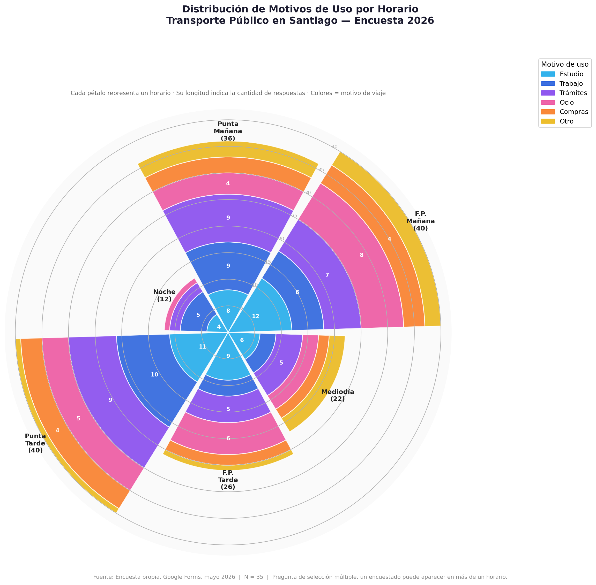

Encuesta de Movilidad Urbana · N = 35
¿Cómo se
mueve
Santiago
?
Análisis del comportamiento de usuarios del transporte público en Santiago, basado en encuesta propia realizada en abril–mayo 2026.
51
%
Estudiantes
universitarios
54
%
Usa Metro
+ RED
35
Respuestas
encuesta
PERFIL TARIFARIO
HORARIOS DE USO
SISTEMA VS MOTIVO
MOTIVOS RELATIVOS
DISTRIBUCIÓN HORARIA
Distribución
Horaria
Visualización grupal que muestra la distribución de viajes por bloque horario, diferenciando por día laboral y fin de semana.
VISUALIZACIÓN GRUPAL

63%
de usuarios que usan
ambos sistemas
viajan por motivo de
Estudio
40
menciones en
Punta Tarde
(18-20h), el horario más activo de la red
54%
de encuestados usa
Metro + RED
combinados en su movilidad diaria
12
menciones en
Noche
(20h+), el horario de menor actividad registrada